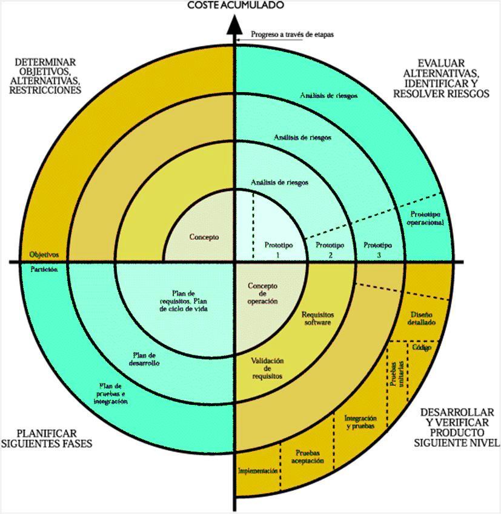

Acerca de
El modelo de desarrollo en Espiral es una combinación entre el modelo waterfall y un modelo por iteraciones.
El proceso pasa por distintas etapas, desde la de conceptualización, siguiendo el desarrollo, luego una fase de mejoras, para finalizar con el mantenimiento.
Dentro de cada etapa, tendremos una serie de fases que transcurren desde la planificación, pasando por el análisis de riesgos, el desarrollo y finalizando en la evaluación de lo realizado. Se incorpora también una fase de enlace entre etapas, para facilitar la transición entre las mismas.
En definitiva, el equipo de desarrollo en este modelo de desarrollo en espiral comienza con un pequeño conjunto de requisitos y pasa por cada fase de desarrollo para ese conjunto de requisitos. El equipo de desarrollo agrega la funcionalidad para el requerimiento adicional en espirales cada vez mayores, hasta que la aplicación está lista para la fase de producción.
¿Dónde usarlo?
Como se mencionó anteriormente, el modelo en espiral se usa mejor en proyectos grandes, costosos y complicados. Otros usos incluyen:
- proyectos en los que son necesarios lanzamientos frecuentes.
- proyectos en los que pueden ser necesarios cambios en cualquier momento.
- proyectos a largo plazo que no son factibles debido a prioridades económicas alteradas.
- proyectos de riesgo medio a alto.
- proyectos en los que el análisis de costos y riesgos es importante.
- proyectos que se beneficiarían de la creación de un prototipo.
- proyectos con requisitos poco claros o complejos.
Diagrama del modelo en espiral
Ahora paso a paso
- Determinar objetivos
- Análisis de riesgo
- Desarrollar y probar
- Planificación
Definición de objetivos y alternativas y descripción de las condiciones generales. Un ciclo típico del modelo espiral comienza con la valoración de qué objetivos deben vincularse a cada uno de los pasos del desarrollo de software. Se puede tratar, por ejemplo, de la mejora del rendimiento o de la ampliación de la funcionalidad. Al mismo tiempo, es el momento de definir las alternativas para la implementación y determinar las condiciones generales como los costes o la inversión de tiempo.
Es hora de evaluar las alternativas, momento en el que los objetivos y las condiciones generales serán valores de referencia decisivos. En esta fase del ciclo del desarrollo en espiral, deberán identificarse los ámbitos de inseguridad que presenten un riesgo significativo para el progreso del proyecto de software. Después de seguir la elaboración de las estrategias que presentan menos riesgo y que sean más rentables, por lo cual se podrán utilizar métodos como el modelo de prototipos, simulaciones, estudios comparativos, modelos de análisis y encuestas a usuarios.
Al finalizar el análisis de riesgos, se prosigue con el desarrollo real del software, así que esta fase siempre está caracterizada por los riesgos relativos restantes. Si el proceso de desarrollo está dominado por riesgos de rendimiento o de interfaz de usuario, o riesgos del control de la interfaz, se ofrece primero una estrategia de desarrollo evolutiva, donde se especifica el proyecto con más precisión y se optimizan los prototipos. El código real se escribe y se prueba varias veces hasta alcanzar el resultado deseado, que puede servir entonces como base de bajo riesgo para otros pasos de desarrollo.
planificación del siguiente ciclo. Una vez concluido ya se empieza a planificar el siguiente ciclo. Por una parte, en forma de avance normal del proyecto, si los objetivos de un ciclo se han podido cumplir y se debe definir el siguiente objetivo. Por otra parte, también se puede tratar de encontrar soluciones, en caso de que la etapa de desarrollo anterior haya fracasado. En este caso, la estrategia seguida hasta entonces se puede sustituir, por ejemplo, con las alternativas definidas anteriormente o con una nueva alternativa. De esta forma, se puede intentar conseguir de nuevo el objetivo del mercado.
Ventajas
- Modelo flexible y genérico.
- Posible integración temprana de promotores y usuarios.
- Comprobación periódicas y enfocadas al riego.
- Conciliación perfecta entre exigencias técnicas y diseño.
- Máximo control sobre costes, recursos y la calidad del proyecto de software.
- Apropiado para entornos técnicos novedosos.
Desventajas
- Modelo flexible y genérico.
- Posible integración temprana de promotores y usuarios.
- Comprobación periódicas y enfocadas al riego.
- Conciliación perfecta entre exigencias técnicas y diseño.
- Máximo control sobre costes, recursos y la calidad del proyecto de software.
- Apropiado para entornos técnicos novedosos.
El modelo en Espiral se encuentra dentro de las metodologías o modelos ágiles, con lo que es otra posible aproximación cuando estamos pensando agilizar nuestra organización o nuestros proyectos.
Es un sistema que tiene muchos años funcionando de manera satisfactoria en la entrega de proyectos, por lo que es un candidato sólido que debe ser tenido en cuenta.
¡Continúa con SCRUM!
Aprende sobre el siguiente modelo
Continuar